La arquitectura olvidada...
Bienvenidos a un recorrido por la diversidad arquitectónica de África. Desde las antiguas técnicas de construcción de adobe en Mali hasta los palacios de madera de Benín, descubriremos la riqueza y la historia detrás de las distintas estructuras que adornan este vasto continente.
La arquitectura africana es un testimonio de la creatividad humana, fusionando innovación y tradición. En Mali, las antiguas técnicas de construcción de adobe crean estructuras duraderas y hermosas. En Benín, los intrincados diseños de madera adornan los palacios reales, mientras que en Etiopía, las iglesias excavadas en la roca deslumbran con su antigua majestuosidad. Cada región ofrece una perspectiva única de la excelencia arquitectónica africana.
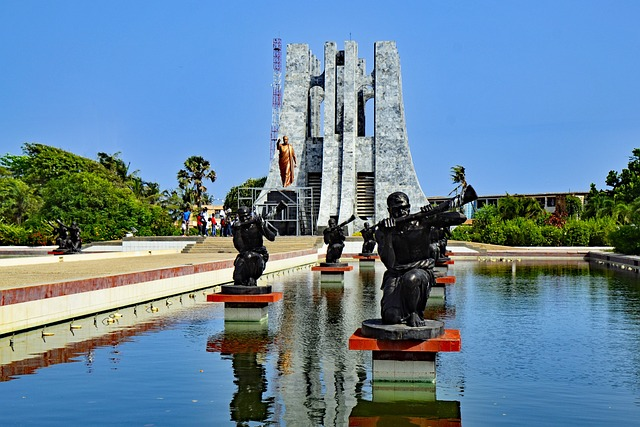 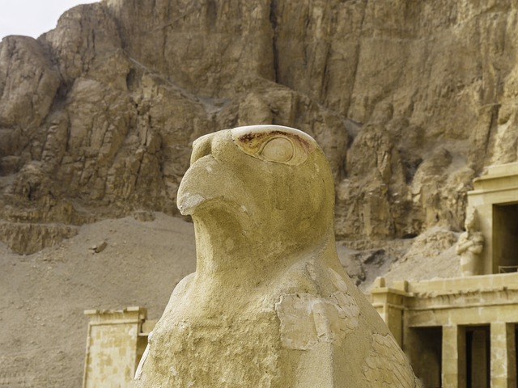
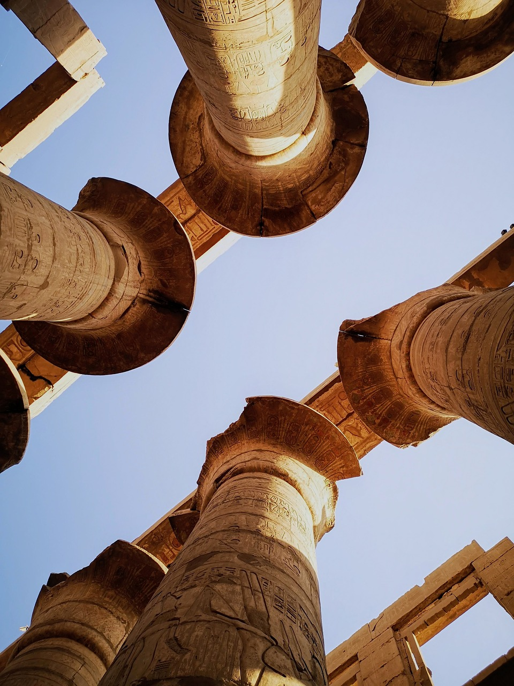
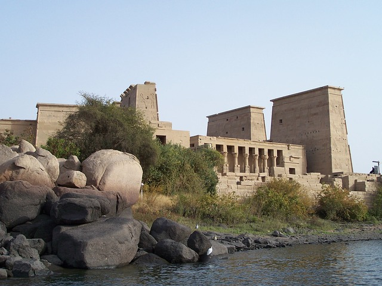
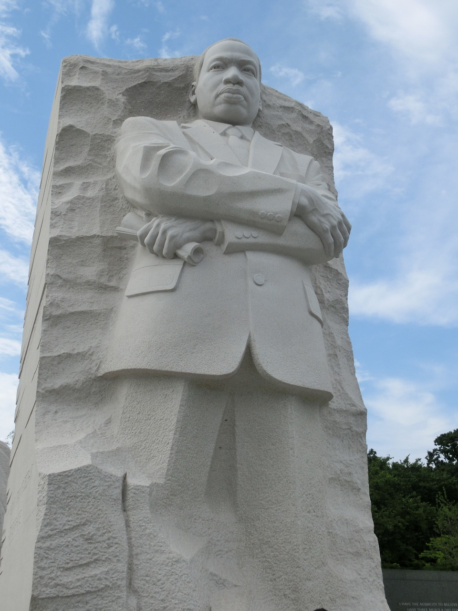
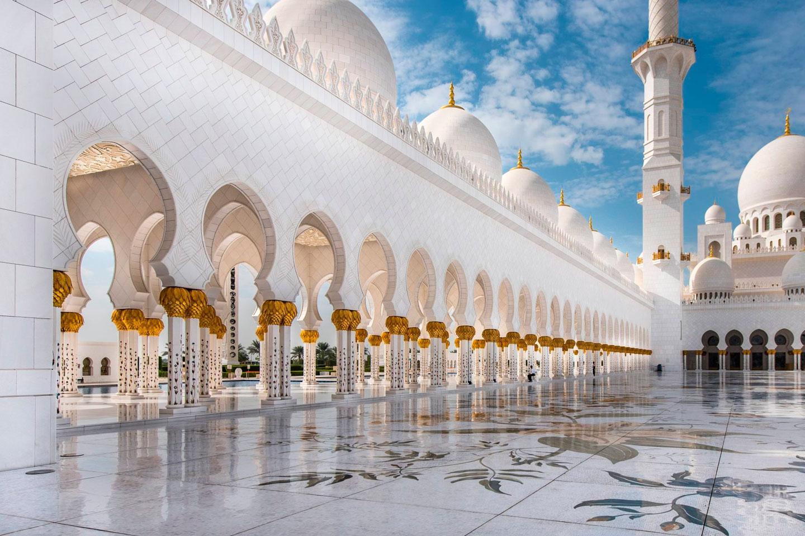
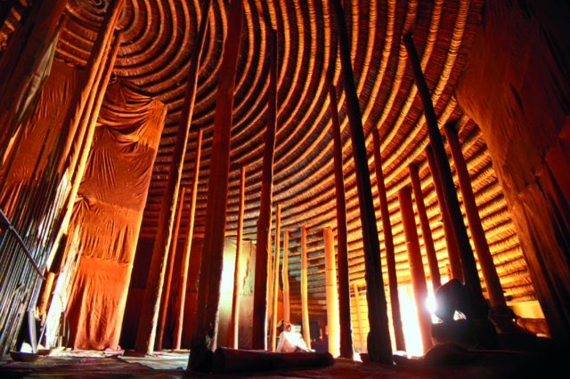
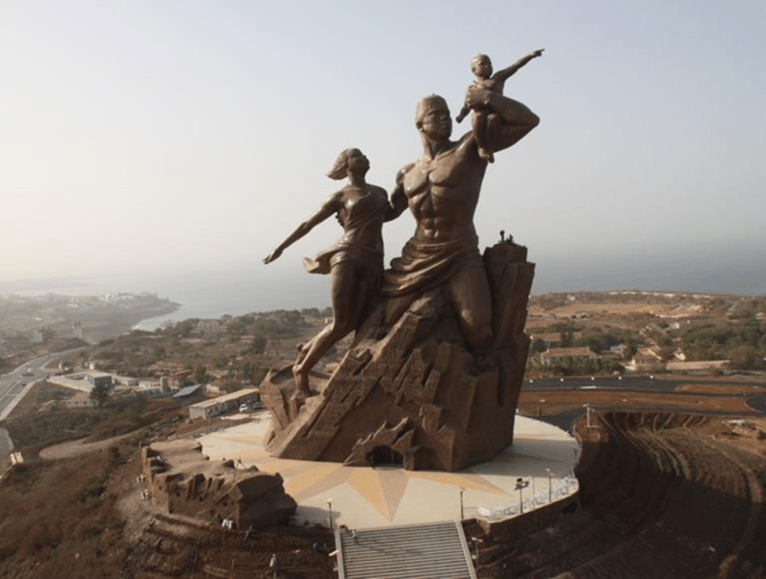
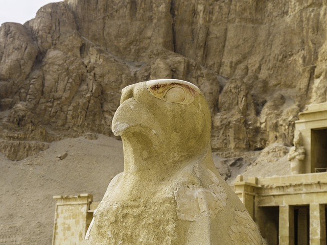
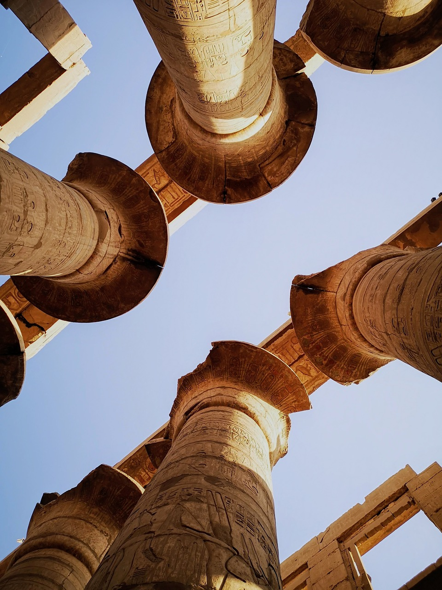
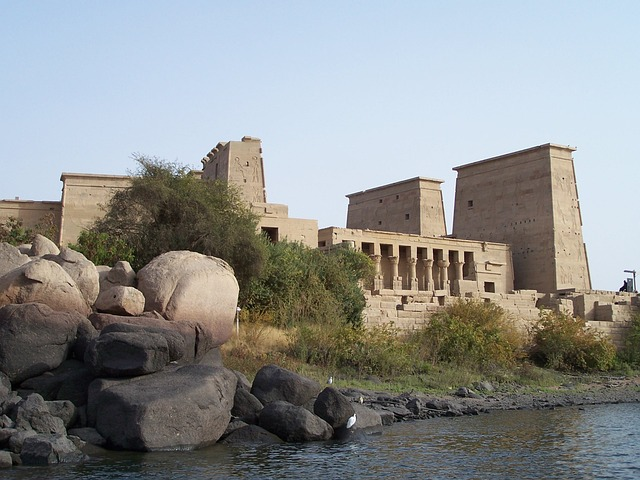
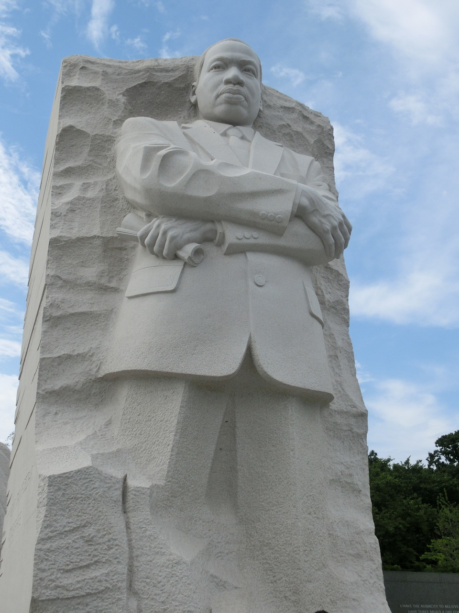
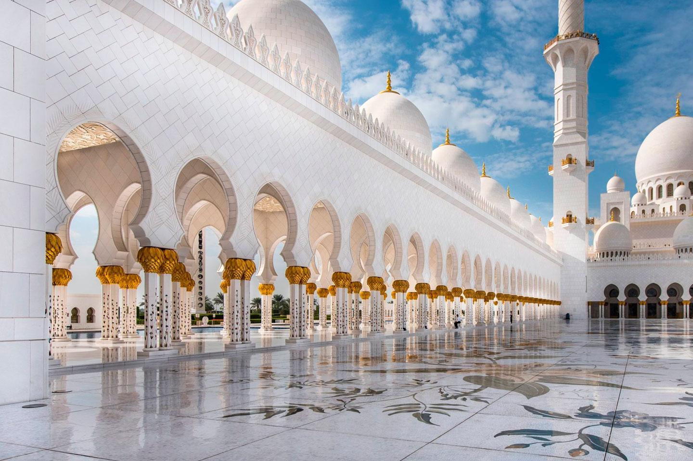
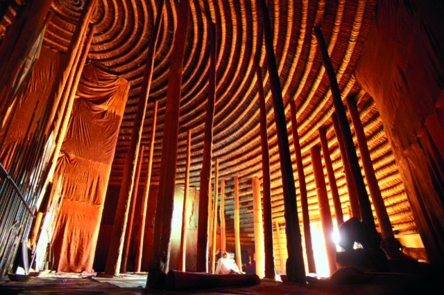
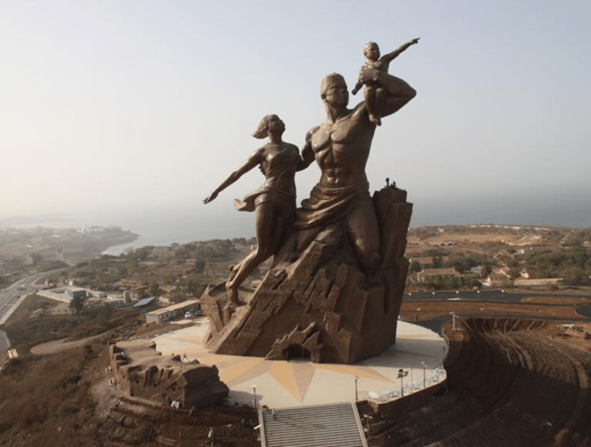
La arquitectura africana cuenta historias milenarias. Desde la Gran Mezquita de Kairouan, construida en el siglo IX en Túnez, hasta las pirámides de Giza, que datan del 2580-2560 a.C. en Egipto, y los zocos de Marrakech, que datan del siglo XI en Marruecos, cada país tiene su propio legado arquitectónico impresionante.
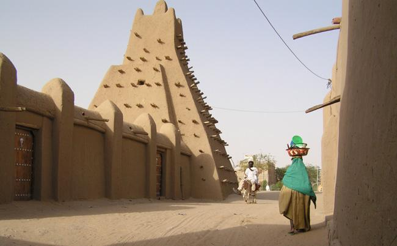Las fotos de Horus, una deidad egipcia, nos llevan a las antiguas civilizaciones del Valle del Nilo, donde la arquitectura monumental, como el Templo de Edfu, rinde homenaje a esta deidad protectora. Las imágenes de Ghana nos transportan a la rica historia de este país, desde los vibrantes mercados hasta los castillos coloniales que cuentan la historia del comercio de esclavos. Además, las fotografías que capturan la lucha por los derechos humanos en África reflejan la resistencia y la determinación de las personas en su búsqueda de justicia y equidad. Estas imágenes son testigos poderosos de la historia y la lucha continua por la libertad y la igualdad en el continente africano.
Dureza de la Esclavitud en África
En las sombras de la historia yacen las pruebas ineludibles de la brutalidad de la esclavitud en África. A través de imágenes y relatos, examinamos las huellas indelebles dejadas por este oscuro capítulo, recordando la resistencia y la humanidad frente a la opresión más despiadada.